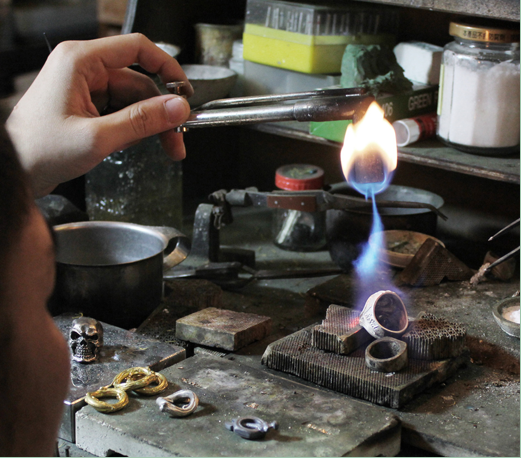
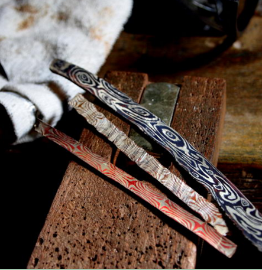
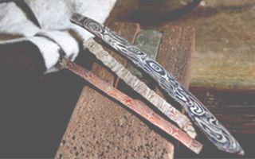
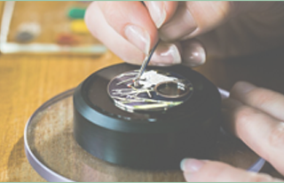
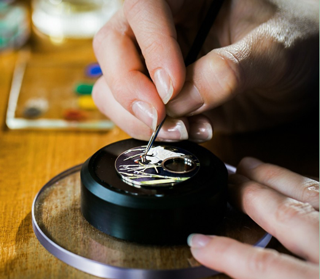

<!DOCTYPE html>
<html lang="en">
<head>
  <meta charset="UTF-8">
  <meta name="viewport" content="width=device-width, initial-scale=1.0">
  <meta http-equiv="X-UA-Compatible" content="ie=edge">
  <link rel="stylesheet" href="style.css">
  <link rel="stylesheet" href="rwd.css">
  <title>KINGJO</title>
</head>
<body>
  
  
<div class="contain">
  <div class="sidebar">
<nav>
  <ul>
    <li>關於我們<br>About</li>
    <li>最新消息<br>News</li>
    <li>一日體驗<br>Experience<br>Class</li>
    <li>商品選購<br>Shop</li>
    <li>聯絡我們<br>Contact us</li>
  </ul>
</nav>
  </div>
  <div class="main">
    <p id="one">首飾課程由簡入深，<br>
從打版成型開始，<br>
於課程中加入專業<br>
鑲檯製作技術，讓<br>
首飾更添色彩與價值。<br>
</p>

    
    
    <p id="two">木目金為傳統金工<br>
技法，美麗的圖紋<br>
需較多工時製作，<br>
適合已具金工能力<br>
背景者進階研習。<br>
</p>

<p id="cell2">木目金為傳統金工技法，美麗的圖紋需較多工時製作，適合已具金工能力背景者進階研習。</p>
    <p id="three">琺瑯永垂不朽的工<br>
藝價值,細膩優雅<br>
如糖果色般的釉藥，<br>
更添首飾迷人效果。<br>
</p>

<p id="cell1">琺瑯永垂不朽的工藝價值,細膩優雅如糖果色般的釉藥，更添首飾迷人效果。</p>
  
    
  </div>
</div>

<div class="clear"></div>
  <footer>
    <p>copyright@grasshilljewelry</p>
  </footer>
</body>
</html>
